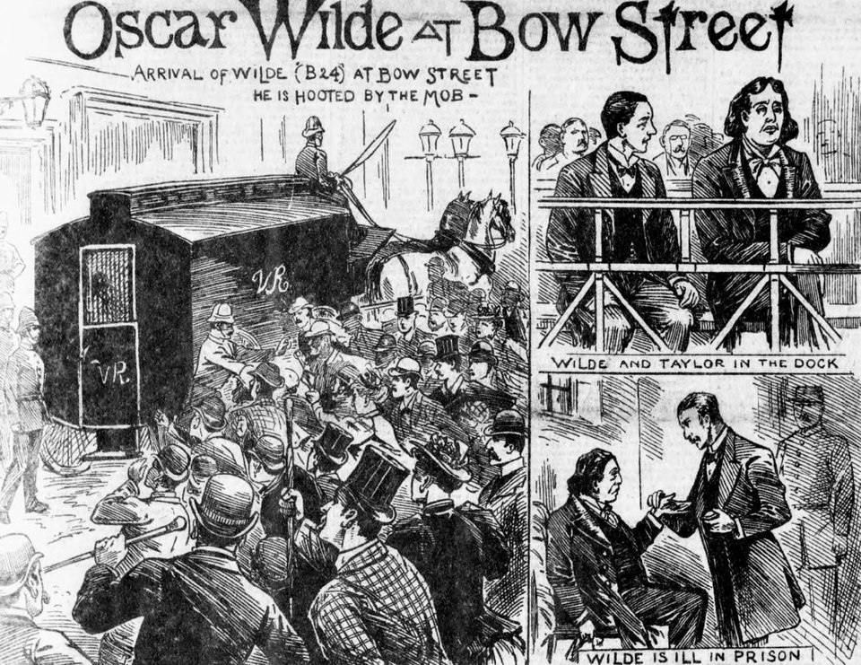

Oscar Wilde et la prison (1894–1897)
Édition numérique : fac-similés des manuscrits, transcription et traduction françaises, accompagnées d’un index d’entités nommées pour naviguer dans le corpus.
Cette édition numérique explore, à travers trois lettres, le basculement d’Oscar Wilde : de la vie littéraire et mondaine à l’expérience carcérale, puis à la sortie de prison et à l’exil.
En 1895, Oscar Wilde est poursuivi et condamné pour gross indecency, une infraction introduite dans le droit britannique par l’amendement Labouchere du Criminal Law Amendment Act de 1885. Cette disposition criminalise les relations sexuelles entre hommes, même lorsqu’elles relèvent de la sphère privée.
À l’issue d’une série de procès très médiatisés, Wilde est condamné à deux ans de travaux forcés. La prison — d’abord à Pentonville et Wandsworth, puis à Reading Gaol — transforme durablement sa santé, sa situation matérielle et sa manière d’écrire.
À sa libération en 1897, il quitte l’Angleterre et s’installe en France sous le nom de Sebastian Melmoth, cherchant à se soustraire à la stigmatisation sociale qui suit sa condamnation.
Le projet propose une lecture “au plus près” des documents : fac-similés des manuscrits, transcription et traduction, accompagnés d’un index d’entités nommées (personnes, lieux, organisations, œuvres) permettant de naviguer dans les réseaux biographiques et culturels évoqués dans les lettres.
Chronologie des lettres
Chaque carte renvoie à une page dédiée : fac-similés, transcription et traduction en français.
Ces lettres dessinent un arc narratif : avant la prison (logiques éditoriales, stratégie de publication), puis après (gratitude, lucidité, solitude, besoin d’anonymat). Elles montrent aussi la manière dont Wilde se situe face à ses proches, à ses soutiens, et face à l’Europe continentale — notamment la France, perçue comme un refuge.

Une édition pour lire… et pour comprendre
Ce site propose deux manières de lire : une lecture continue des lettres, et une lecture “documentaire”, attentive au manuscrit. Chaque lettre est présentée sous forme de page autonome, avec ses fac-similés, sa transcription (d’après l’encodage TEI), et sa traduction française.
L’objectif n’est pas seulement de “montrer des images”, mais de donner des repères : qui écrit, à qui, quand, depuis où, et dans quel contexte. L’index d’entités nommées (personnes, lieux, organisations, œuvres) permet de passer du texte aux notices, puis de revenir immédiatement à l’endroit exact où l’entité est citée.
Enfin, la page Méthodologie documente le travail d’édition : choix d’encodage, transformation XSLT multipages, et principes de mise en page (CSS/JS) — de façon à rendre le projet reproductible et vérifiable.
Repères chronologiques
Quelques dates pour situer le corpus dans la trajectoire de Wilde et l’histoire juridique qui encadre sa condamnation.
- 1854 — Naissance d’Oscar Wilde à Dublin (16 octobre).
- 1884 — Mariage avec Constance Lloyd.
- 1885 — Criminal Law Amendment Act : l’amendement Labouchere (“gross indecency”) entre en vigueur au Royaume-Uni.
- 1885 — Naissance de Cyril Wilde.
- 1886 — Naissance de Vyvyan Wilde.
- 1891 — Publication de The Picture of Dorian Gray (version en volume).
- 1891 — Rencontre avec Lord Alfred Douglas (“Bosie”).
- 1892 — Première de Lady Windermere’s Fan.
- 1893 — Première de A Woman of No Importance.
- 1895 — Première de An Ideal Husband et de The Importance of Being Earnest.
- Avr.–mai 1895 — Procès et condamnation de Wilde à deux ans de travaux forcés.
- 1895–1897 — Détention (Pentonville, Wandsworth, Reading Gaol).
- Mai 1897 — Libération et départ pour la France ; usage du nom “Sebastian Melmoth”.
- 1900 — Mort d’Oscar Wilde à Paris (30 novembre).
Sources et repères bibliographiques
Ressources institutionnelles (fac-similés) et éditions de référence pour situer les lettres, la prison et Reading Gaol.
Fac-similés (institutions)
- Lettre à John Lane (août 1894) — The Morgan Library & Museum : notice et images.
- Lettre au Major Nelson (fin mai 1897) — The New York Public Library : notice.
- Lettre à Henrietta Stannard (fin mai 1897) — Trinity College Dublin (Digital Collections) : notice.
Éditions et travaux de référence
- Merlin Holland & Rupert Hart-Davis (éd.), The Complete Letters of Oscar Wilde, Fourth Estate, 2000.
- Oscar Wilde, The Soul of Man, and Prison Writings, éd. Isobel Murray, Oxford University Press (Oxford World’s Classics), 1990.
- Oscar Wilde, The Ballad of Reading Gaol, 1898 (texte issu de l’expérience carcérale).
- Richard Ellmann, Oscar Wilde, Knopf, 1988 (biographie de référence).